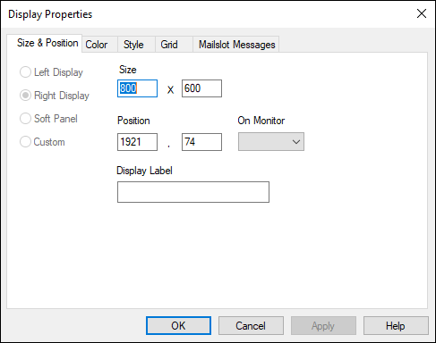
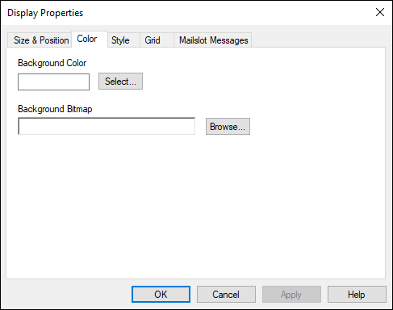
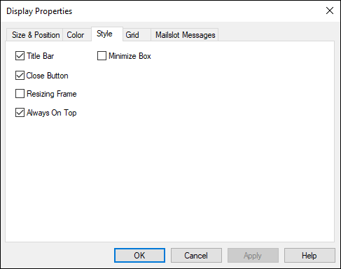
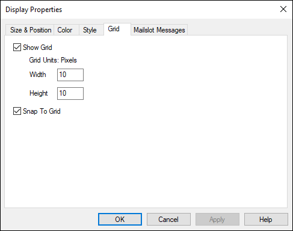
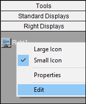
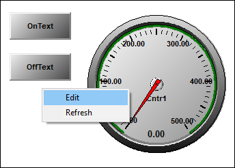

Creating a Right Display¶
|
 |
NOTE: |
This section is only applicable when employing a multi-monitor configuration. |
- Expand the Presentation folder in the Test Manager Tree, followed by the Displays folder.
- Expand the Right folder below the Displays folder.
|
|
NOTE: |
If the Right folder does not exist, set the number of monitors in the Displays section under Global Settings to 2 or 3. You may need to restart Test Manager for the change to take effect. |
- Right-click on Right, and then select New Right Display. A new display named "Right1" displays in the Tree Bar.
- Click to select the new display in the Tree Bar, type a new name, and then press Enter.
- Double-click on the new display in the Tree Bar to open it in the Test Manager Display Area.
- Right-click on the Test Manager Display Area, and select Display Properties to open the Display Properties dialog box.
Display Properties

- The Size & Position tab displays the default display size (800x600). To change the display size, enter the new height and width values in the Size fields.
- To change the default position of the display on the iTest Console, enter the new X and Y coordinate values in the Position fields.
- Click on the Color tab.
Color Tab

- Click Select to open the Color dialog box in which you can select a predefined background color or create a custom background color for the display.
- Click Browse to display the Open dialog box in which you can select a bitmap to use for the display’s background. Bitmaps are imported at the size they were created and cannot be resized on the display. Bitmaps smaller than the display will be tiled to fill the display.
- Click on the Style tab.
Style Tab

- Select Title Bar, Minimize Box, and Close Button if you want these items to appear on the display.
- Click on the Grid tab. The options on this tab allow you to create a grid of dots that displays on the Display Area to help you align controls. The grid does not display on the iTest Console.
Grid Tab

- Show Grid is selected by default. To change the size of the grid, enter new values (in pixels) in the Width and Height fields. Controls will Snap to Grid marks by default. If you don’t want controls to snap to the grid, deselect this option.
- Click Apply to save changes without closing the Display Properties dialog box. Click OK to save changes and close the Display Properties dialog box.
- Select an object from the Object Bar list and click Insert, or click on one of the controls on the Display toolbar to insert a control on the display.
- Right-click on the control to open its properties dialog box, and specify the appropriate settings.
- Repeat steps 17 and 18 for each object you want to add to the display.
- Save the display.
Editing a Right Display During Runtime¶
You can edit a running right display by right-clicking on a specific display in the Right Display tab and selecting the Edit option. This will bring up the display in the main display area, at which point you may edit it as needed.
Edit Display

You can also directly edit a right display by right-clicking on the display itself:
Edit Display
